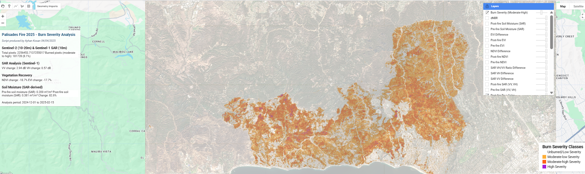

All projects
Palisades Fire Burn Severity Analysis
Remote Sensing & GIS Analysis
March 2025 · updated November 2026
Project Overview
The Palisades Fire started on January 7, 2025 in the Santa Monica Mountains and burned into Pacific Palisades and Malibu before it was contained on January 31. This project maps burn severity across the fire with Sentinel-2 optical imagery and adds Sentinel-1 radar change as a second, cloud-independent signal. The results are published in an interactive Google Earth Engine app.
Data
- Sentinel-2 Surface Reflectance (harmonized): before (December 1, 2024 to January 6, 2025) and after (February 1 to February 12, 2025) median composites
- Cloud Score+ for Sentinel-2, combined with the Scene Classification Layer to remove cloud, shadow, snow and water
- Sentinel-1 GRD (VV and VH), restricted to one orbit direction and one relative orbit so the before and after scenes share the same viewing geometry
- JRC Global Surface Water for permanent water and USGS 3DEP 10 m elevation for the terrain hillshade
- Optional: the official fire perimeter, used for the statistics and for an unburned reference ring around the fire
Method
- dNBR: the Normalized Burn Ratio before minus after, scaled by 1,000 and offset-corrected with the median dNBR of an unburned ring 0.5–2.5 km outside the perimeter (Key & Benson, 2006). The offset removes seasonal and illumination differences between the two composites.
- Severity classes: seven classes from enhanced regrowth to high severity, using the Key & Benson / USGS dNBR thresholds
- Relativized Burn Ratio (RBR): dNBR relative to pre-fire NBR (Parks et al., 2014), which compares better across the fire's mix of chaparral, grassland and developed land
- Vegetation loss: NDVI and EVI before minus after
- Radar change: speckle filtering and averaging in linear power, then VV and VH backscatter change in dB and change in the radar vegetation index (RVI)
- The after window ends February 12, before the February 13–14 storm that brought mudslides to the burn area. Wet soil would otherwise be read as change in the radar data.
Interactive App
- Analysis map with a layer switcher: severity classes, dNBR, RBR, NDVI and EVI loss, radar VH change, radar vegetation index change and a SWIR false-color image
- Before/after swipe comparison in true color or SWIR false color
- Opacity control, an option to hide unburned pixels, and a terrain hillshade on a muted basemap
- Color-blind-safe palettes, with diverging scales centered on zero
- Headline areas (burned, moderate to high, high severity), an area-by-class chart and a click inspector that reads every layer at a point
- Exports of all rasters, moderate-to-high severity polygons and the class area table

(opens in a new tab)Burn severity map of the Palisades Fire in the Earth Engine app. View on Google Earth Engine (opens in a new tab)
Limitations
- dNBR measures change in vegetation and soil. It does not measure structure loss, so severity in the burned neighborhoods is understated.
- The class thresholds are the standard Key & Benson breaks. They have not been calibrated with field plots for this fire.
- Radar backscatter also responds to soil moisture and surface roughness, so it is shown as supporting evidence and is not used in the classification.
- The after window is short (12 days), so persistent cloud can leave gaps.
References
- Key, C.H. & Benson, N.C. (2006). Landscape Assessment: ground measure of severity, the Composite Burn Index, and remote sensing of severity, the Normalized Burn Ratio. FIREMON, USDA Forest Service RMRS-GTR-164-CD.
- Parks, S.A., Dillon, G.K. & Miller, C. (2014). A new metric for quantifying burn severity: the Relativized Burn Ratio. Remote Sensing, 6(3), 1827–1844.
- UN-SPIDER Recommended Practice: Burn Severity (opens in a new tab)